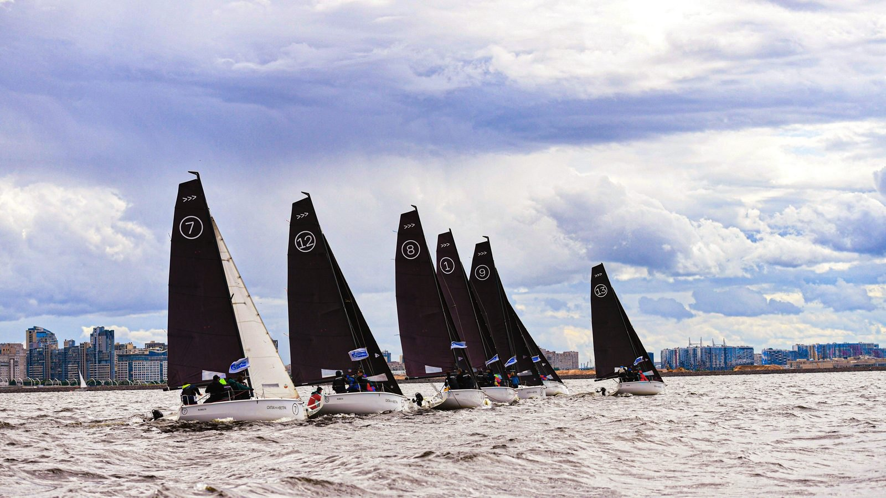
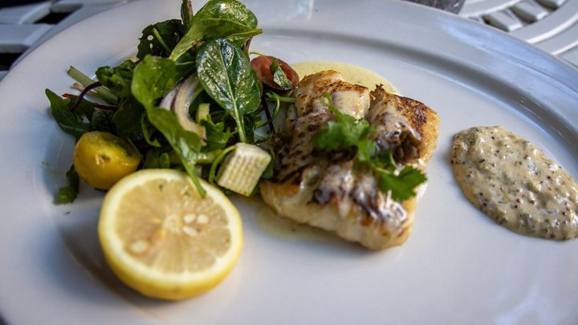

Navegantes · Trabalho
Navegantes · TrabalhoNavegantes abre a semana com 647 vagas de emprego, e 223 delas estão no Sine
A economia da cidade que agora comemora aniversário, em número de vaga aberta.
A entrada é gratuita, de sexta a domingo, na Arena de Eventos do Pontal. Morada, Ferrugem e Chiquito & Bordoneio dividem o palco com o 4º Festival Náutico e um torneio de pesca de R$ 35 mil em prêmios.
Em 30 segundos · Modo de Leitura, formato original Santa Informa
Navegantes completa 64 anos de emancipação e faz festa de 28 a 30 de agosto.
É na Arena de Eventos do Pontal, no bairro São Pedro, e a entrada é gratuita.
Na sexta, palestra do velejador Flávio Jardim às 19h30 e show da Banda Morada às 21h.
No sábado, desfile de barcos às 11h e Ferrugem às 22h.
No domingo, Festival de Pesca a partir das 7h e Chiquito & Bordoneio às 16h.
O 4º Festival Náutico traz regatas, desfile de embarcações e a Papa Lavagem.
O 5º Festival de Pesca distribui R$ 35 mil e espera mais de 200 equipes.
Não entram comida, bebida, cooler, garrafa de vidro, bicicleta, sombrinha e cadeira.
A Defesa Civil prevê temporal no sábado e no domingo em todo o litoral.
TurismoPublicada em Redação Santa Informa

Navegantes completa 64 anos de emancipação político-administrativa e marcou a festa para 28, 29 e 30 de agosto, na Arena de Eventos do Pontal, no bairro São Pedro. A entrada é gratuita nos três dias. Junto com os shows correm duas competições no mar e no rio, e é isso que separa a festa de Navegantes das outras da região.
Na sexta, 28, a recepção dos velejadores começa às 18h, a palestra do velejador Flávio Jardim é às 19h30 na Vila da Regata, e a Banda Morada sobe ao palco às 21h. No sábado, 29, o desfile de barcos é às 11h e Ferrugem toca às 22h. No domingo, 30, o Festival de Pesca abre às 7h e Chiquito & Bordoneio fecha a festa às 16h. Nomes da região, como Juninho Almeida, Trio Caiçara e Banda Puro Malte, se apresentam ao longo dos três dias. Há Vila Gastronômica no local.
Flávio Jardim é velejador e recordista do Guinness. Ele percorreu 8.120 quilômetros da costa brasileira em cima de uma prancha de windsurf e foi o brasileiro mais jovem a dar a volta ao mundo em veleiro. A palestra se chama "Um sonho maior que os NÃOS", é gratuita e aberta à comunidade.
O 4º Festival Náutico reúne regatas, desfile de embarcações e a Papa Lavagem. O 5º Festival de Pesca distribui R$ 35 mil em prêmios e a organização espera mais de 200 equipes na disputa, que começa cedo no domingo.
A organização não libera comida, bebida, cooler, garrafa de vidro, bicicleta, sombrinha e cadeira na área do evento. Quem for de longe já sabe: leve pouca coisa na mão.
Navegantes fica logo depois de Itajaí, no Litoral Norte, e festa de aniversário de cidade vizinha, com entrada franca e nome nacional no palco, puxa gente de todo o litoral. Quem for precisa contar com trânsito na volta e olhar o tempo antes de sair: a Defesa Civil prevê temporal com granizo e vendaval no sábado e no domingo em Santa Catarina.
O resumo de 30 segundos está no topo e a versão completa é o texto acima. Aqui ficam as três leituras da casa sobre o mesmo assunto.
Clara, a otimista
Festa de aniversário com entrada franca e três dias de programação é das poucas coisas que ainda cabem no orçamento de uma família inteira. Show nacional de graça, no fim de agosto, num litoral que passa o inverno de porta fechada, é um respiro.
E tem a parte que não é show: regata, desfile de barcos e um torneio com mais de 200 equipes. Navegantes celebra o aniversário fazendo o que a cidade sabe fazer, que é viver do mar e do rio.
Seu Prudêncio, o criterioso
Merece atenção o encontro de duas informações que saíram no mesmo dia. A festa foi confirmada para sábado e domingo, e a Defesa Civil publicou aviso de temporal com granizo e vendaval justamente para sábado e domingo. Evento ao ar livre, com palco, estrutura montada e barco no mar, precisa de plano B claro e comunicado com antecedência. Vale acompanhar os canais oficiais da Prefeitura de Navegantes até a hora de sair de casa.
Uma sugestão útil para quem vai de Itapema ou de Porto Belo: combine antes o ponto de encontro e o horário de volta. Show que termina às 23h no sábado joga todo mundo na BR-101 ao mesmo tempo, e com pista molhada isso muda o tempo de viagem.
Feita a ressalva, a montagem do evento é acertada. Concentrar tudo numa arena única, com Vila Gastronômica no local e programação escalonada da manhã à noite, distribui o público em vez de amontoar. E amarrar a festa ao Festival Náutico e ao Festival de Pesca dá à cidade algo que show sozinho não dá, que é identidade.
Caco, o sarcástico
Na lista do que não pode entrar está a sombrinha. Justo no fim de semana em que a previsão é de temporal. Alguém aí conversou com o meteorologista antes de imprimir o regulamento.
Também não pode cooler nem garrafa de vidro. Ou seja, a única coisa liberada para molhar a festa vem do céu mesmo.
Fora isso, é a programação perfeita: regata no sábado, pesca no domingo e chuva nos dois. Ninguém pode dizer que faltou água.
Fontes: Prefeitura de Navegantes, comunicado publicado em 27 de agosto de 2026, com a festa dos 64 anos de 28 a 30 de agosto na Arena de Eventos do Pontal, no bairro São Pedro, entrada gratuita, os shows da Banda Morada na sexta às 21h, de Ferrugem no sábado às 22h e de Chiquito & Bordoneio no domingo às 16h, as atrações regionais Juninho Almeida, Trio Caiçara e Banda Puro Malte, a recepção de velejadores às 18h de sexta, o desfile de barcos às 11h de sábado, o Festival de Pesca a partir das 7h de domingo com R$ 35 mil em prêmios e expectativa de mais de 200 equipes, o 4º Festival Náutico com regatas, desfile de embarcações e Papa Lavagem, a Vila Gastronômica e a Vila da Regata, e a lista do que não é permitido entrar. Prefeitura de Navegantes, comunicado de 27 de agosto de 2026 sobre a palestra "Um sonho maior que os NÃOS", gratuita, às 19h30 de sexta na Vila da Regata, com os recordes de 8.120 quilômetros da costa brasileira em prancha de windsurf e a volta ao mundo em veleiro. Defesa Civil de Santa Catarina, atenção meteorológica de 27 de agosto de 2026 às 10h20, com previsão de temporais, granizo, vendavais e chuva intensa nos próximos dias.
Navegantes · TrabalhoA economia da cidade que agora comemora aniversário, em número de vaga aberta.
 Litoral Norte · Infraestrutura
Litoral Norte · InfraestruturaA preparação da cidade para a chuva que agora está prevista para o fim de semana.

Bombinhas · TurismoOutro evento de baixa temporada que o litoral usa para segurar movimento no inverno.